OverviewReciPro is a free software for those who make a crystallographic investigation with electron microscopes. This software performs various geometrical and crystallographical calculations based on the crystal structures. Some of features of this software are drawing of Crystal structure (Bonds, polyhedrons, or crystal faces also can be drawn). Crystal orientation by a stereo projection. Diffraction patterns. ReciPro has a space group database, and in addition to the 230 space groups contained in the International Tables for Crystallography Volume A, 530 space-group symmetrical element, Wicoff position, and extinction rule which are took account of axis transformation, are available. Atomic information such as valence, radius and scattering amplitude are also contained. Execution environmentRequired operating conditionReciPro needs .Net Framework upper than ver. 4.0. This software designed to work within a .Net Framework 4.0. As long as .Net is installed, the software will work regardless of version of Windows or 32/64bit environment, because it compile the intermediate code during execution. Recommended operating conditions» Memory: >4GB » CPU: >2GHz & >4cores In this software multithreaded calculations are frequently used. Therefore, it will work more smoothly if you use a CPU with multiple cores. Cooperative software
If you use ‛CS Manager‘, another database which contains more than 30 thousands of crystal structures will be available. Main Window
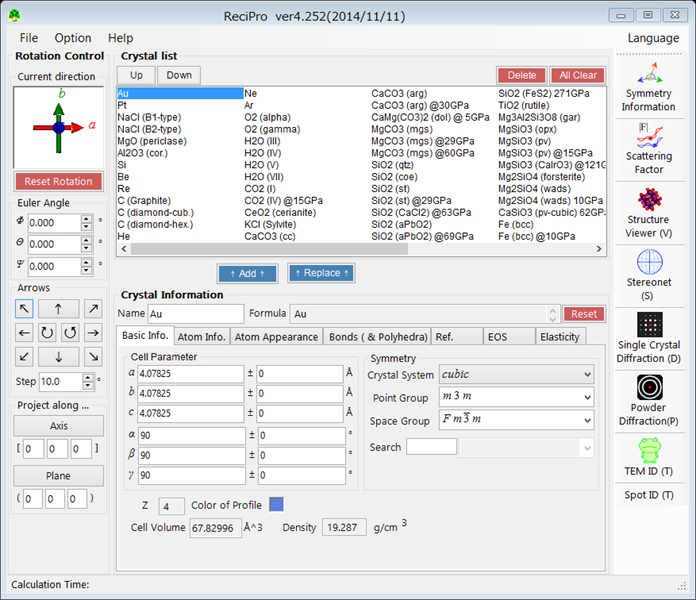 File Menu
File
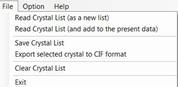 For reading and exporting files. Read Crystal List (as new list)Click this to read a new crystal list (xml file). The list will be read after present data list has been cleared. Read Crystal List (and add to the present data)Click this to read a new crystal list (xml file). The new list
will be added to the end of present data list. Save Crystal Data
Click this to save the crystal list (xml file). Export selected crystal to CIF formatClick this to export a selected crystal to CIF format. Clear Crystal List
Click this to clear the crystal list. Exit
Click this to finish this program. Option
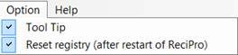 ToolTip
Check this option to display tool tips (explanations or hints) on
buttons and text boxes. Reset registry
Check this option to reset the registry after restarted the program. Help
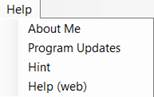 About Me
Click this to check the authority or version information. Program Updates
Click this to update the ReciPro to the latest version. HintClick this to display tips for using this program or development
information. Help (Web)
Click this to display the online help page (what you currently
viewing). Tool Menu
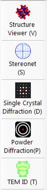 ReciPro has 4 main features, and its’ control window will be open by clicking the icons. The rotation
of the crystal is synchronized among the windows. If you change the crystal
rotation on a window, the change will be reflected to the crystal information
in all other windows. Structure Viewer
Use this function to draw a 3-dimentional structure of crystals. Crystal planes, unit cells, or coordination polyhedra are also can be drawn. Details are given in the section on Structure Viewer. Stereo Net
Use this function to plot the direction of crystal plane or axis on the stereographic net. Details are given in the section on Stereo Net. Electron Diffraction
(Single/Powder)
Click the Single Crystal Diffraction (D) icon or the Powder Diffraction (P) icon to draw electron diffraction spot pattern and Kikuchi line pattern. Details are given in the section on Single crystal Diffraction and Powder Diffraction. TEM ID
Use this function to index the electron diffraction patterns which you took by a TEM. Details are given in the section on TEM ID. Rotation Control
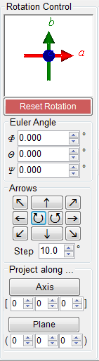 Rotation state of the
selected crystal is displayed on the top of rotation control panel. You can
rotate the crystal by dragging the mouse over the axes image. Red arrow, blue
arrow and green arrow represents a-axis, b-axis and c-axis, respectively. Reset Rotation
Click this button to
reset the rotation state of the crystal. Euler Angle
Euler angle is displayed
here and you can set the angle by entering the values. Arrows
Click the buttons with
an arrow to rotated the crystal to the direction which the arrow pointing, in
the set angle step. Projection along...
You can project crystal
to the crystal axis or plane. Axis
The crystal will be rotated to the direction which the set crystal
zone axis will be front side of, and perpendicular to the display plane. If a
plane perpendicular to this axis has been set, the plane will be set as
upward of display. Plane
The crystal will be rotated to the direction which the normal of
the set crystal plane will be front side of, and perpendicular to the display
plane. If an axis perpendicular to this plane has been set, the crystal zone
axis will be set as upward of display. Crystal List
The crystal list which
is read in the ReciPro will be displayed here and you can modify the list. If
you choose a crystal in the list, the detailed information of the crystal
will be displayed in the `Crystal
Information’ below and set as the object of the calculation. Up button
Click to up the selected crystal in the list Down buttonClick to down the selected crystal in the list. Delete button
Click to delete the selected crystal from the list. All Clear button
Click to delete all crystals in the list. When you want to add a new crystal or modify a crystal data which already listed, you should set the crystal data in the `Crystal Information (see below)’ and click the add button or Replace button. Add buttonThe set crystal will be added in the tail end of the crystal
list. Replace button
The selected crystal in the list will be replaced by the set
crystal in the `Crystal
Information’. Crystal Information
Crystal information such
as lattice constant, symmetric property and atomic location will be displayed
and you can set these values of the crystal. 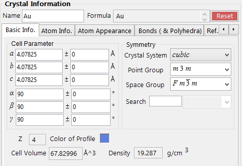 This section is so long that it is explained in another web page: Crystal Information Help. Structure
Viewer
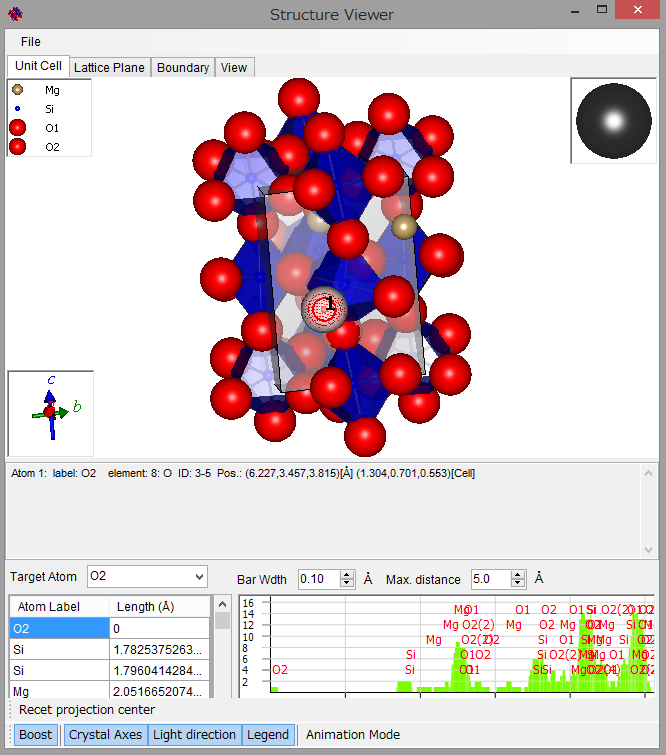 Structure of the selected crystal will be drawn by OpenGL. The colors of atoms, coordination polyhedra, or bonds can be set in the `Crystal Information’. You also can set the color of the atom in the atom property window. After select an atom by double clicking, you can open this window by clicking the right mouse button on the selected atom. File menu
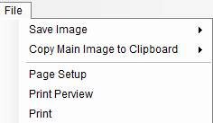 Save Image
You can save the drawn
image of crystal structure, legend, crystal axes or light direction. Please set
the image resolution and enter the file name. Copy Image to Clipboard
You can copy the drawn
image of crystal structure, legend, crystal axes or light direction to
clipboard. After set the image resolution, please paste it into the software
of your choice. Print
You can print the drawn
crystal structure image. Drawing window
The crystal structure
image is displayed in this window. Mouse action
Left drag over inner the
window to rotate on an axis parallel to the display plane. Left drag over outer the
window to rotate on an axis normal to the display plane. Middle drag to make
parallel shift. Right drag or wheel to
zoom. Left double click to
select atoms/ Clear the selection. Right click, with an
atom has been selected, to display atomic property. Tab menu
Unit Cell
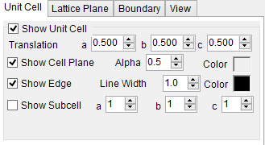 You can choose whether
display the unit lattice or not. When you check `Show Unit Cell’, the unit cell is drawn and you’ll be
able to make more advanced settings at the same time. Translation
You can
design the distance that unit cell shifts parallel with each crystal axis.
The distance can be set on a, b, c axis independently. For example, if you
enter "0.5" in edit box titled a, unit cell will be drawn in the point
which shift parallel with a axis by distance of half of the axis length. Show Cell Plane
You can choose whether or not to show unit cell plain. Alpha: You can set the transparency of cell plane. Plane Color: You can select the color of cell plane. Show Edge
You can choose whether or not to show the frame of unit cell. Line Width: You can set the width of cell frame. Edge Color: You can select the color of cell frame. Show Subcell
You can choose whether or not to show sublattice of the unit
cell. a,b,c: You can set how many part you want to make by divide each
axis. Lattice Plane
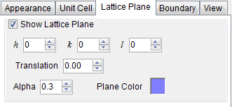 You can choose whether
display lattice planes or not. When you check `Show lattice plane’ lattice plane is drawn and at the same time you’ll be able to make more advanced settings. h,k,l: please enter the indeces of crystal plane which you want to draw. Translation:
You can design the distance that the plane shifts normal to itself. If you
enter "1", the crystal plane shift just one period and revert to
the first position. Alpha: You can set the transparency of crystal plane. Plane Color: You can select the color of crystal plane. Boundary
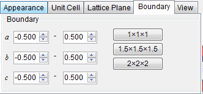 You can set the drawing
range of crystal. a,b,c: You can set the drawing range for each axis. View
3D quality
You can set the number into which meridian and latitude line are
divided. If you make this value bigger, the image will be smoother while at
the same time the process become slower. Projection
You can choose the way of projecting. Ortho: The image will be drawn as projected from infinity. This
way lacks a sense of perspective. Perspective: The project image will be drawn with perspective.
The objects which nearer will be displayed bigger. The degree of perspective
can be controlled by the slide bar. Tool bar
Legend
When this tool has
been checked, color and size legend of atoms are displayed on upper left
corner. Lightning ball
When this tool has been
checked, the lighting ball is displayed on upper right corner. You can change
the light-source direction by left dragging on this ball. Crystal Axes
When this tool has been
checked, the crystal axes will be displayed on lower left corner. The length
of each axis reflect the lattice constant of crystal. You also can rotate the
crystal structure image by dragging mouse over this box. Stereonet
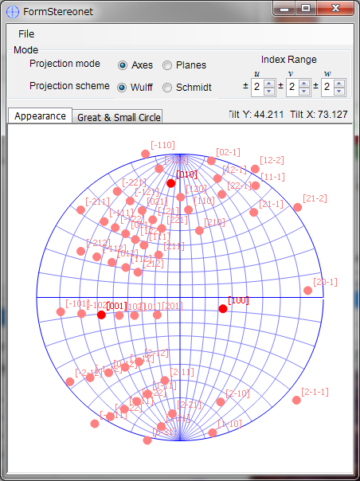 Crystallographic orientation relationship of crystal planes and axes will be displayed. Mode
Projection Mode
Axis: When this radio
button is checked, axes are displayed on the stereonet. Plane: When this radio
button is checked, crystal planes are displayed on the stereonet. Projection Scheme
Wulff: When this radio button is checked,
equiangular projection will be calculated. In this mode the areas will not be
preserved. Scmidt: When this radio button is checked,
equiareal projection will be calculated. In this mode the angles will not be
preserved. Index Range
You can set the range of
indexes. Drawing Window
Mouse action
Left drag to rotate the
net. Right drag to zoom in. Right click to zoom out. Tab menu
Apearance
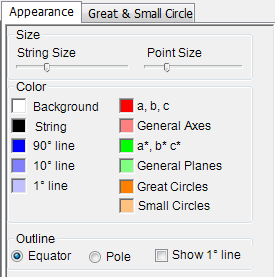 Size
You can control size of plotted points or strings by the slide
bars. String
Size: You can change the text size of indexes which is displayed beside a
plotted points on the net. Point Size: You can change the size of points plotted on the
net. Color
You can select the colors of points, texts, or lines of stereo
net. Outline
You can select the way to display lines of stereo net. Great and Small Circle
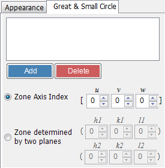 You can draw great and/or small circle. This content is now under construction. Single Crystal
Diffraction
You can see simulated electron beam diffraction pattern or Kikuchi line from single crystal. 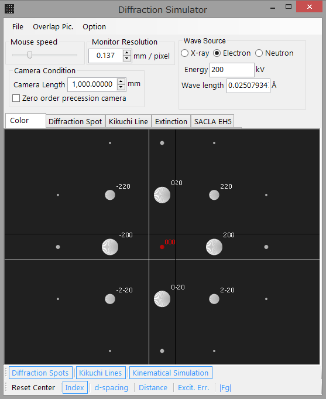 File
File
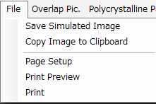 Save ImageYou can save the diffraction pattern image. Please set the image
resolution and enter the file name. Copy Image to Clipboard
You can copy the diffraction pattern image to clipboard. After
set the image resolution, please paste it into the software of your choice. Print
You can print the diffraction pattern image. Overlap Pic.
Details are given in the
section on Overlap Picture. PolyCrystalline Pattern
Details are given in the
section on PolyCrystalline Pattern. Drawing wiondw
Mouse action
Left drag to rotate the
net. Right drag to zoom in. Right click to zoom out.
Condition
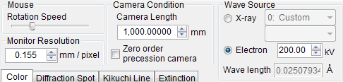 Please set the condition of your TEM observation. Mouse
You can set the mouse
sensitivity for rotating image by mouse. Monitor Resolution
You can enter the number
of pixels per mm. There is no need for entering actual value, because it is
set only for scale. This parameter will be modified when you zoom the image
by mouse. Camera Condition
Camera Length
Please enter the camera length of your TEM observation. Zero order precession camera
If you check this box, the simulated precession camera image of
zero order Laue zone will be displayed. Wave Source
Acc. Voltage
Please enter the acceleration voltage of
your TEM observation. The wave length of electron beam is calculated by this
value with relativistic correction. Tab Menu
Color
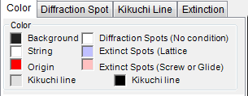 You can select the color
of the spots, text, or Kikuchi line. Diffraction Spot
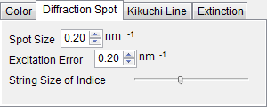 You can set the
conditions for diffraction spot mode. Spot Size
Please enter size of diffraction spot in inverse nm. Roughly
speaking, this parameter depends on selector aperture size and lens
aberration. Excitation Error
Please
enter excitation error in inverse nm. Roughly speaking, this parameter
depends on the thickness of sample. String Size of indices
You can set the text size with this slide bar. Kikuchi Line
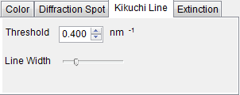 You can set the
conditions for Kikuchi line mode. Threshold
Please enter lower limit of lattice spacing of displaying
Kikuchi line. Line Width
You can set the width of Kikuchi line with this slide bar. Extinction
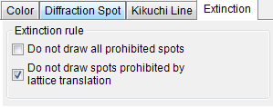 You can select the
settings on extinction rule. In general, the spots come from screw axis and
glide plane make multiple reflection, and sometimes these spots observed with
significant intensity even if it satisfy the extinction rule. The extinction
rule which originated with lattice translation have absolute effect at any
time. Do not draw all prohibited spotsIf you check this box, all prohibited reflection spots will not
be drawn. Do not draw spots prohibited by lattice translationIf you check this box, only the reflection spots which
prohibited by lattice translation will not be drawn. Bottom tools
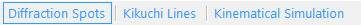 Diffraction Spots
When this button has
checked, diffraction spots are drawn. Kikuchi Line
When this button has
checked, Kikuchi lines are drawn. Kinematical Simulation
When this button has
checked, diffraction spots are drawn with size which based on kinematically
simulated intensity. This calculation might take some time to derive the
structural factor of every diffraction spot.
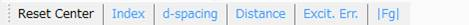 Reset Center
Click this button to
reset the origin of reciprocal lattice to be centered. Index
Click this button to
display indexes. d-spacing
Click this button to
display d-spacing. Distance
Click this button to
display distance from the origin of reciprocal lattice. Excit. Err.
Click this button to
display the excitation error. |Fg|
Click to this button to
display lattice structural factor. Polycrystalline
Diffraction
This content is now under construction. TEM ID
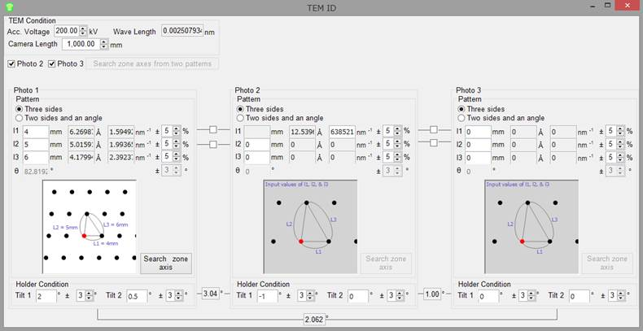 |